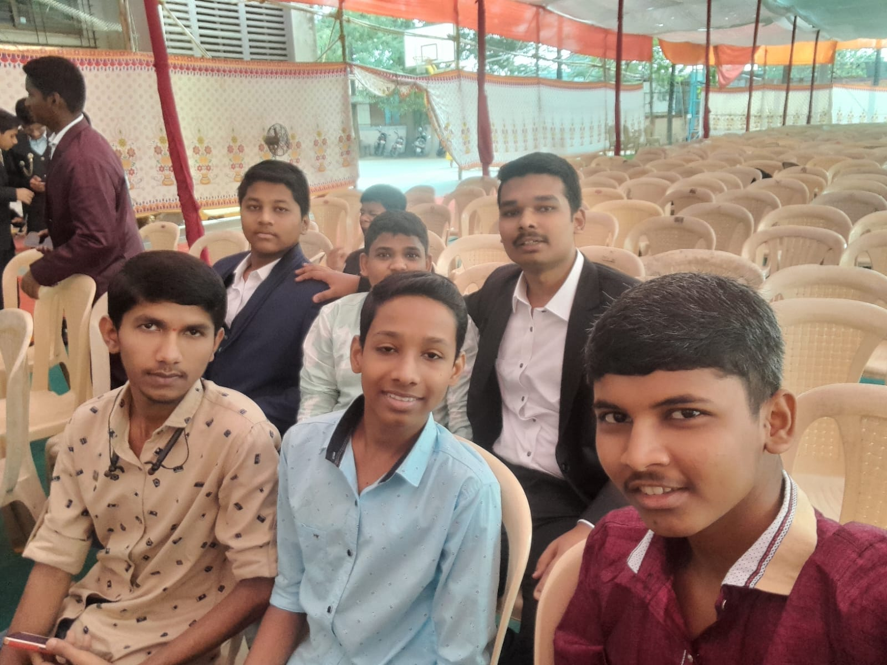
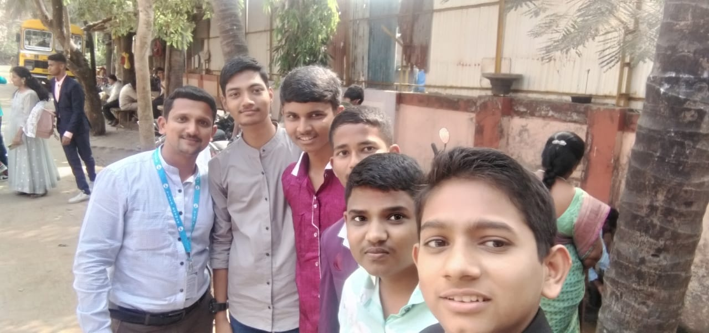

P.V.G'S Vidya Bhawan
High School & Junior College
School wasn't just a place where I studied. It was where I made some of my first unforgettable friendships, met some of the most supportive and friendly teachers and experienced countless moments that still stay with me.
We studied together, played together, participated in sports, went on school picnics and simply enjoyed being together. The last day and annual function became especially emotional because it suddenly felt like an important chapter of life was coming to an end.
Even today, whenever I pass by my school, the memories of that place, those benches and those teachers come back instantly. Some memories are simply unforgettable.

